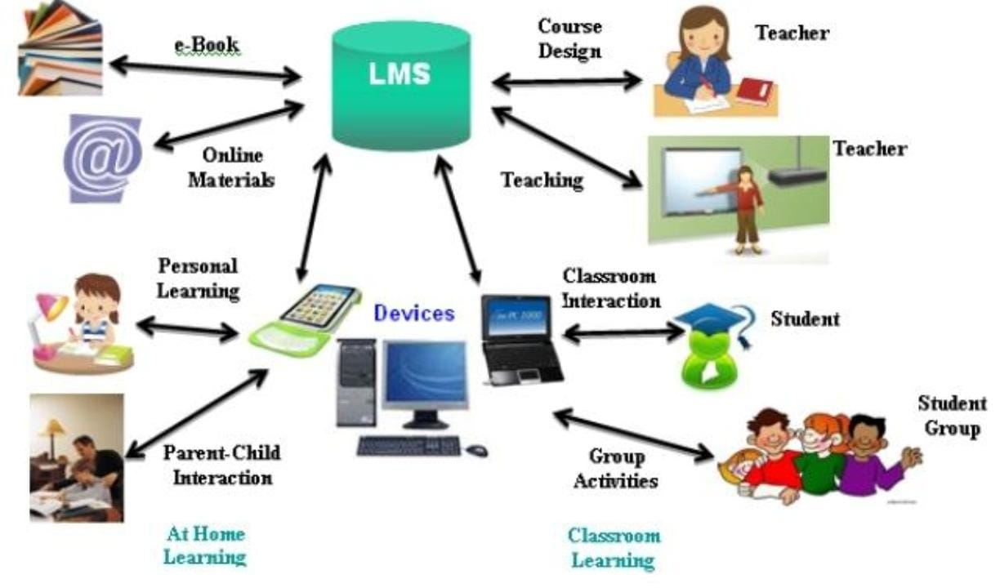

اسم الطالبة:حبيبة محمود امين الدميري
الرقم الجامعي :2502804
شهد قطاع التعليم في السنوات الأخيرة طفرة هائلة بفضل دخول التكنولوجيا الحديثة والذكاء الاصطناعي في الفصول الدراسية. ولم يعد التعلم مقصوراً على القاعات التقليدية، بل ظهرت "منصات التعلم الإلكتروني" كأداة محورية لربط المعلمين بالطلاب، ومن أبرز هذه المنصات وأكثرها انتشاراً منصة Google Classroom. تأتي هذه المنصة لتلغي الحواجز الزمنية والمكانية، مساهمة في تسهيل التواصل، توزيع المهام، ورفع كفاءة العملية التعليمية برمتها.
تلعب منصات التعلم الإلكتروني دوراً أساسياً في تغيير شكل التعليم اليومي. فهي توفر بيئة رقمية آمنة تتيح للمعلمين رفع الواجبات، والمناهج، والاختبارات، بينما يتمكن الطلاب من تسليم مه امهم ومتابعة تقييماتهم بشكل فوري ومنظم
| عنصر النظام | الوظيفة والمسؤولية |
|---|---|
| المعلم (Teacher) | رفع الواجبات، تصميم المناهج، وتقييم الطلاب. |
| الطالب (Student) | تسليم المهام، متابعة الاختبارات، والتفاعل الفوري. |

في الختام، أصبحت منصات التعلم الإلكتروني مثل Google Classroom ضرورة حتمية وليست مجرد رفاهية تكنولوجية. فهي لا تسهم فقط في توفير الوقت والجهد، بل تعد الطلاب للتعامل مع بيئة العمل الحديثة التي تعتمد كلياً على التكنولوجيا والمنصات الرقمية. وإن دمج هذه الأدوات بالتعليم يمثل خطوة أساسية نحو مستقبل تعليمي أكثر كفاءة ومرونة.